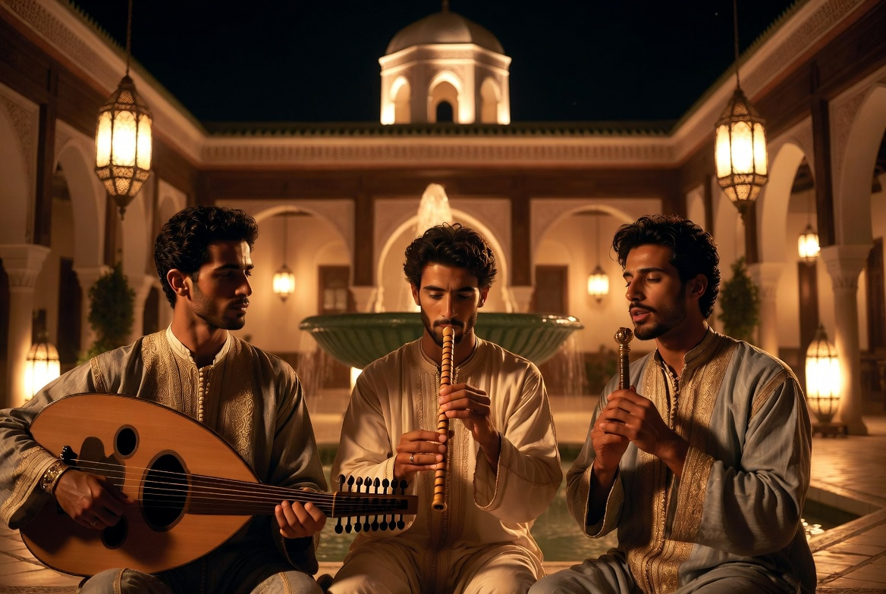

Music & chant
الآلة
Four disciplines of sound, gesture and speech — never a performance, always a transmission.

At Dar al-Hiraf, the body is learned like matter: through repetition, patience, and a master's quiet authority. What follows brings together four disciplines of this kind — one governs learned sound, another gesture, the third sung speech, the fourth the rhythm of the brotherhoods.
AN EXILED TRADITION
Al-Âla — Andalusian music
Andalusian music (al-âla, الآلة, literally “the instrument”) has its roots in the courts of al-Andalus, particularly Granada under the Nasrids. After 1492 and the fall of the last Muslim kingdom of Spain, Andalusian musicians went into exile in the cities of the Maghreb — Fez, Tetouan, Rabat — and transmitted their art there across the generations of masters who followed.
It is not a fixed repertoire: it is a chain of oral transmission, master to disciple, running unbroken across five centuries.
The nouba
The nouba (نوبة) is the structuring form of al-âla: a long musical suite, organised into movements of increasing tempo, each with its own sung poems. Eleven nouba survive today out of the twenty-four that oral tradition reports as having originally existed — a loss that the masters of Fez regard as one of the very reasons to preserve what remains.
The instruments
- Oud (عود) — the short-necked, fretless Arab lute, the harmonic heart of the ensemble.
- Ney (ناي) — the oblique reed flute, with its deep, veiled sound, long associated with spiritual as much as secular expression.
- The voice — carried, never forced; the nouba is sung as much as it is played, and the lead singer (munshid, منشد) carries the poem as much as the melody.
شَرِبْنَا عَلَى ذِكْرِ الْحَبِيبِ مُدَامَةً
سَكِرْنَا بِهَا مِنْ قَبْلِ أَنْ يُخْلَقَ الْكَرْمُ
“In remembrance of the Beloved we drank a wine; we were drunk with it before the vine was created.”
Ibn al-Farid — 12th–13th century
This verse, one of the most celebrated in mystical Arabic poetry, belongs to the spiritual repertoire that the Andalusian tradition made its own: the wine here is not that of the cup, but the intoxication of the divine presence.
DISCIPLINE OF THE BODY
Tahtib — the art of the stick

Born in ancient Egypt — its trace can already be found in pharaonic bas-reliefs — and still alive today in Upper Egypt, tahtib is not a fight but a dialogue: two men, two sticks, a drum rhythm that governs every movement. It is not a choreography learned to be shown; it is an exercise in precision, restraint and courage — mastery of the body always preceding mastery of the weapon.
It is in this spirit that it finds its place at Dar al-Hiraf, alongside the other disciplines: not as an attraction, but as a practice of measured courage.
The stick used, called ʿasa (عصا) or nabboud (نبوت), generally measures 1.20 to 1.50 metres — long enough to demand precise management of distance, light enough not to cause serious injury when wielded with precision. The duel is played to a drum rhythm (tabla baladi, طبلة بلدي) that accelerates in stages: each change of tempo forces both men into a new reading of space and of the other's movement. The winner is not the one who strikes hardest, but the one who touches without ever losing the measure.
وَلَقَدْ شَفى نَفسي وَأَبرَأَ سُقمَها
قَولُ الفَوارِسِ وَيْكَ عَنتَرَ أَقدِمِ
“My soul was healed, its sickness cured, by the cry of the horsemen: ‘Courage, Antar, advance!’”
Antarah ibn Shaddad — Mu'allaqa, 6th century
This verse belongs to the Mu'allaqa of Antarah ibn Shaddad — the poet-horseman. It does not describe tahtib itself; but the spirit it carries — the body finding its peace in mastered trial — is what this discipline seeks to transmit.
DISCIPLINE OF SUNG SPEECH
Malhun — the word that is transmitted

Born in the cities of Morocco — Tafilalt, Marrakech, Fez, Meknes, Salé — and recognised by UNESCO in 2023 as intangible cultural heritage of humanity, malhun is an art of rhythmic, sung speech, historically bound to the world of the medinas' craft guilds. A shaykh al-malhun passes on a repertoire to a handful of disciples, following the same rhythm of learning as that of zellige or calligraphy: the memory of the gesture passing from one mouth to another, from one generation to the next.
It is this direct kinship with the world of the workshop that makes malhun one of the most natural transmissions at Dar al-Hiraf.
The malhun repertoire is built around the qasida (قصيدة) — long poems, often running to several dozen verses, sung a cappella and then taken up by a small ensemble (violin, ʿūd, percussion). Themes range from mystical love to praise of the Prophet, passing through very concrete evocations of the craft world — tools, gestures, materials. Among the great names handed down from generation to generation is Sidi Qaddour al-ʿAlami (18th century), still sung today in Fez and Meknes.
DISCIPLINE OF SOUND
Gnawa — the maâlem's transmission

Carried by the three-stringed guembri and the metal qraqeb, gnawa is a music of transmission inherited from brotherhoods of sub-Saharan origin settled in Morocco for centuries — an oral repertoire, outside the written canon of classical Arabic poetry, but no less rigorous in its pedagogy. The master who teaches it bears a title that is no accident: maâlem — the same word as that of the master craftsman, maâlem zellige, maâlem menbut.
A single system of transmission, applied now to stone, now to wood, now to sound: it is this link that justifies its place at Dar al-Hiraf.
The complete gnawa ceremony, called lila (ليلة, “the night”), can last a whole night: it links each colour of cloth, each rhythm of the guembri, to a precise spiritual entity that the chant comes to invoke and then appease. The gnawa maâlem does not simply play a repertoire: he conducts the entire night, knowing when to slow down, when to relaunch, when to close.
“The master does not show a step: he transmits a rhythm that the body must learn to carry on its own.”
The body also finds its rest in silent listening — the samāʿ that closes certain evenings of the house.
WHY AT DAR AL-HIRAF
Transmission, not performance
These four disciplines share the same logic as zellige or calligraphy: a master, a repeated gesture — a melodic phrase, a strike of the stick, a verse, a rhythm — until the body or the voice holds it without thinking. Never a performance given to an audience; a knowledge transmitted in the silence of the workshop or the recollection of an evening gathering.
The terms on this page are gathered in the glossary of the house.